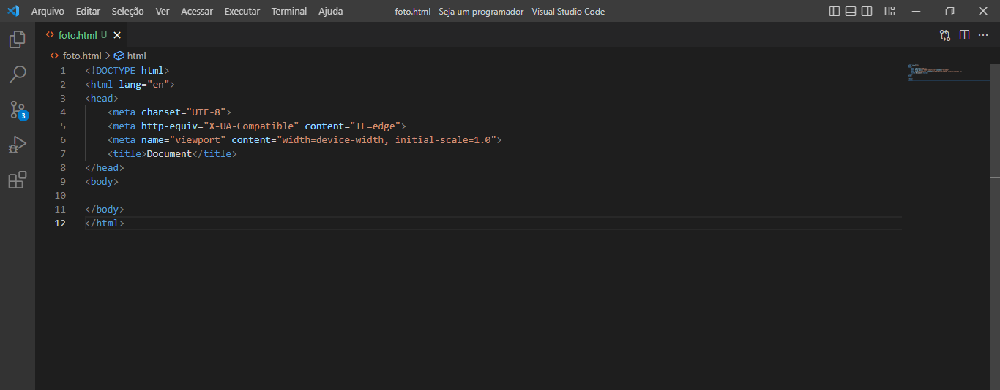

O Que é HTML
A Linguagem de Marcação de Hipertexto (HTML) é uma linguagem de computador que compõe a maior parte das páginas da internet e dos aplicativos online. Um hipertexto é um texto usado para fazer referência a outros textos, enquanto uma linguagem de marcação é composta por uma série de marcações que dizem para os servidores da web qual é o estilo e a estrutura de um documento.
O HTML não é considerado uma linguagem de programação, já que ele não pode criar funcionalidades dinâmicas. Ao invés disso, com o HTML, os usuários podem criar e estruturar seções, parágrafos e links usando elementos, tags e atributos.
Confira abaixo alguns dos usos mais comuns para o HTML:
Desenvolvimento web
Os desenvolvedores usam códigos HTML para projetar como um navegador vai exibir os elementos das páginas, como textos, hiperlinks e arquivos de mídia.
Navegação na internet
Os usuários podem navegar facilmente e inserir links entre páginas e sites relacionados, já que o HTML é amplamente usado para incorporar hiperlinks.
Documentação
O HTML torna possível a organização e a formatação de documentos, de maneira similar ao Microsoft Word.
Como Funciona o HTML
Um site médio inclui diversas páginas HTML diferentes. Por exemplo, ele pode trazer uma página inicial, uma página “sobre” e uma página de contato. Cada uma delas possui um arquivo HTML separado. Documentos HTML são arquivos que terminam com uma extensão .html ou .htm. Um navegador lê o arquivo HTML e renderiza o seu conteúdo para que os usuários da internet possam vê-lo.
Todas as páginas HTML possuem uma série de elementos, que consistem num conjunto de tags e atributos. Os elementos HTML são os tijolos de construção de uma página da internet. Uma tag diz para o navegador onde um elemento começa e termina, enquanto um atributo descreve as características de um elemento.
Confira abaixo as tags principais de um arquivo HTML

Temos vários elementos diferentes em html e cada um faz uma função diferente, se você ja está curioso(a) em saber mais ,vou deixar um link explicando mais sobre html.
Construindo seu primeiro código em html